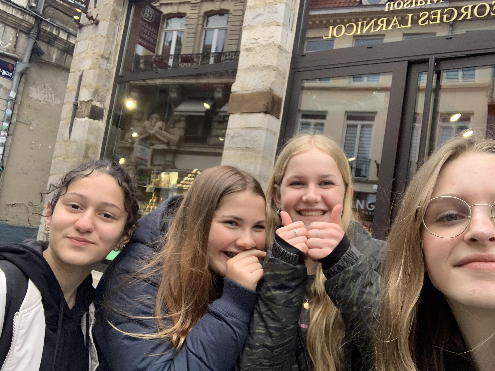
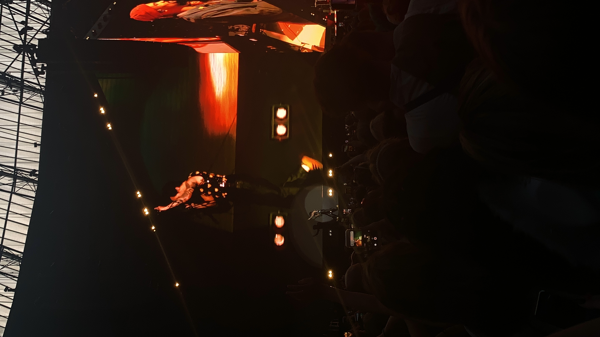

Vorig jaar heb ik een Stage gelopen bij de Leidse Schouwburg en dat vond ik best wel een grote stap aangezien je eigenlijk alles zelf moest regelen en met veel nieuwe mensen moest praten. Ik ben dan ook niet zo'n persoon die gewoon met iedereen praat, dus ik vond het erg spannend. Maar ik vond het heel leuk, gezellig en heb veel geleerd.
Vorig jaar moesten we met havo 3 naar Lille om Frans oprachten te doen. Niemand had er echt zin in en niemand vond de opdrachten leuk. Dat waren ze ook niet, want je moest tegen mensen gaan praten in het Frans. Ik vond het dus wel een voltooid project, want we hadden uiteindelijk wel een goed cijfer.
Verder zijn er niet echt 'projecten' die ik heb voltooid, maar eigenlijk vind ik de concerten waar ik naartoe ben geweest ook wel iets wat ik heb voltooid. Hier zie je dus dat ik naar Harry Styles ben geweest in de Johan Cruijff arena. Het was erg lastig om de kaartjes te krijgen en om dan zo snel mogelijk uit school naar Amsterdam te gaan.

Hetzelfde is bij Lana Del Rey, alleen was het toen nog lastiger. Lana was al 10 jaar niet meer in Nederland geweest, dus veel mensen wouden er naartoe. Ook stond ze in de Ziggo Dome, dus er waren veel minder plekken dan in de ArenA. Gelukkig was het wel in de vakantie, dus ik kon er al vroeg naartoe. Dan krijg je dus wel het probleem dan je ongeveer zo'n 7 uur buiten in de rij zit te wachten.